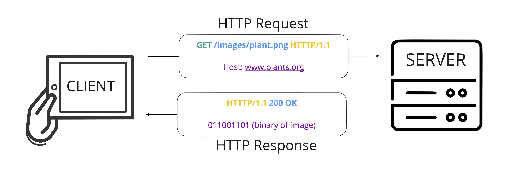
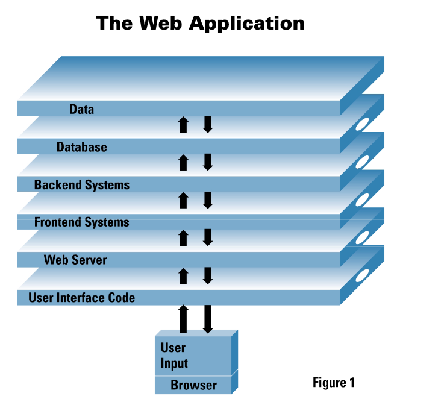
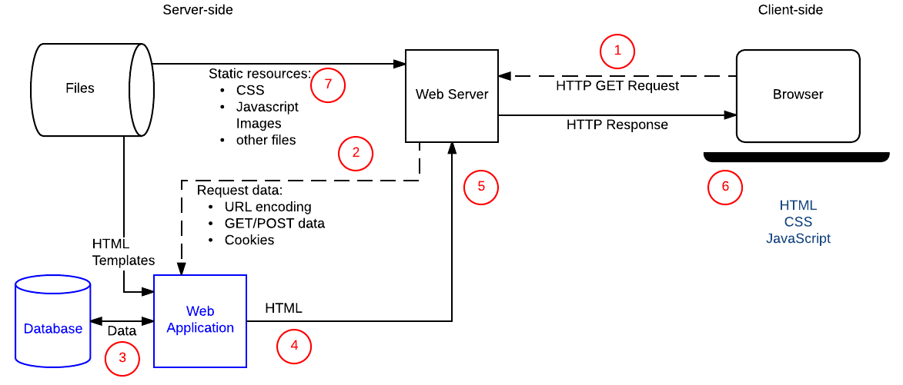
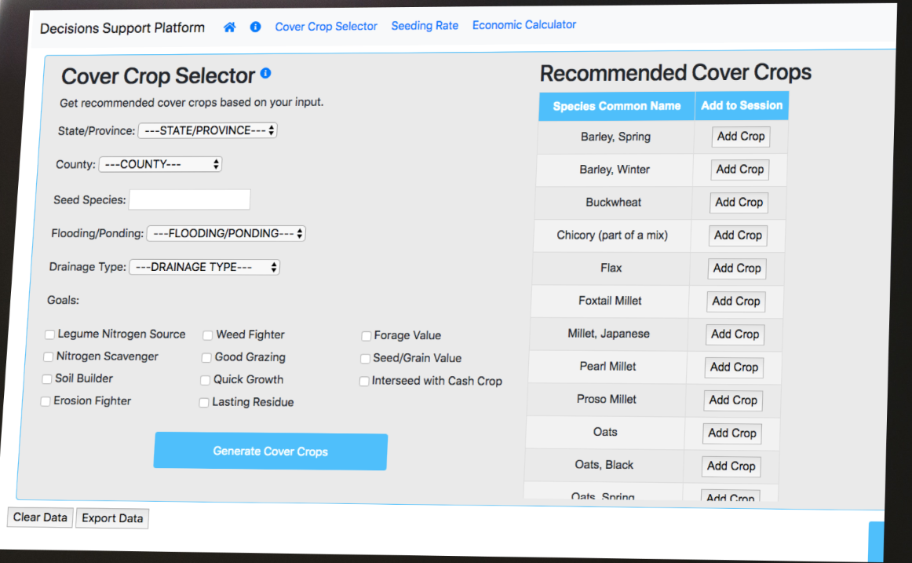
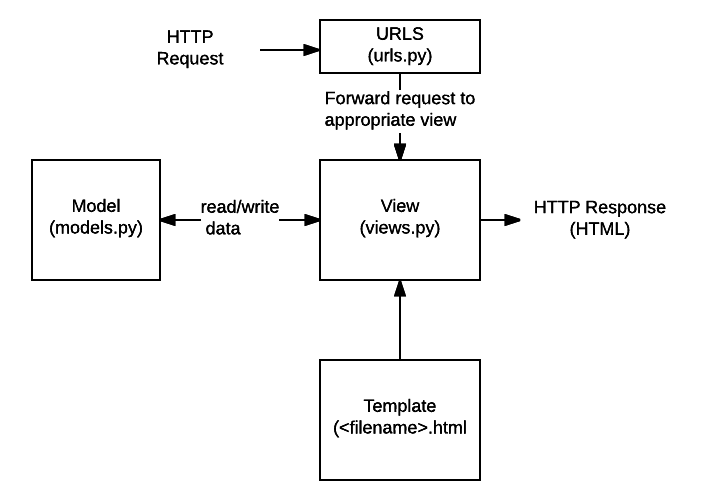
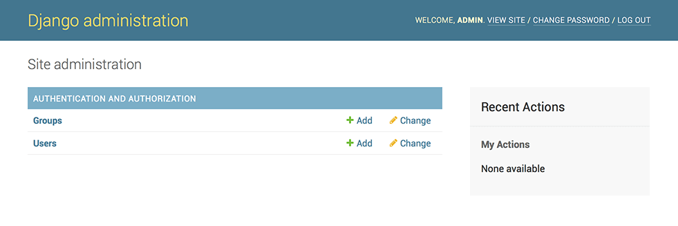
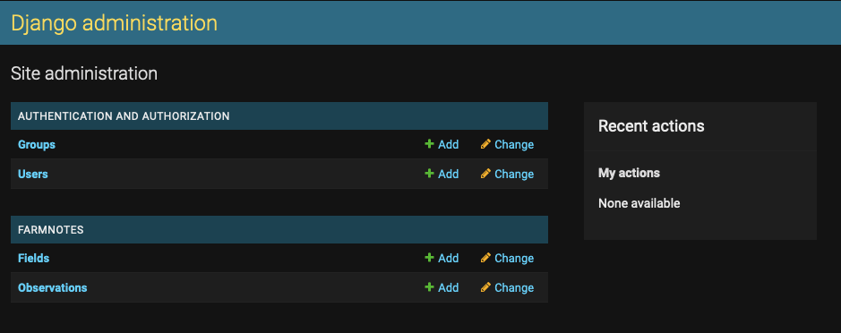
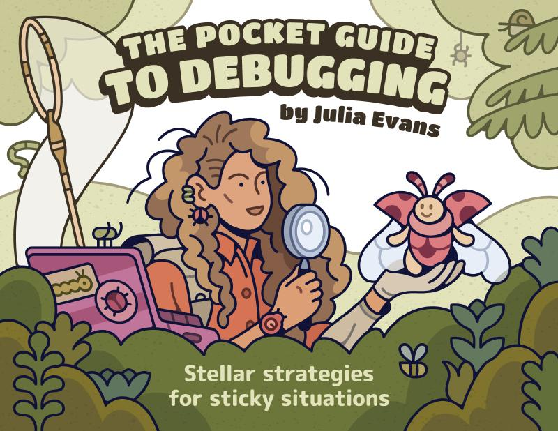

Intro to Django
Module 4 - Web Applications
Lecture 4.2
ASM 532, Introduction to Ag Informatics
Ankita Raturi, ankita@purdue.edu
Lecture Outline
Implement web apps in Django.
- Intro to Django
- Software development tools: Django
- Languages: Python
- Django setup
- Models, the admin dashboard, and fixtures
- Debugging, and the AI debugging starter kit
Goal: Design, scope, and implement a web app MVP.
Static Websites

Dynamic Sites?
"[C]an generate and return content based on the specific request URL and data (rather than always returning the same hard-coded file for a particular URL)."
Dynamic Web Apps
use 'server-side' code to...
- Store, structure, and deliver data (e.g., search engine)
- Notify user on status (e.g., calendar notifications)
- Provide controlled access to content (e.g., email)
- Data analysis to provide user recommendations (e.g., netflix)
- Provide customized user experiences ("Hello {{ person_name }}!")
- ...and much more!
A Simplified Web App Architecture

Pettit, 2001, White paper: Anatomy of a Web Application: Security Considerations. https://www.cgisecurity.com/lib/Web_Server.pdf
Server-Side Programming

"Requests for dynamic resources are instead forwarded (2) to server-side code (shown in the diagram as a Web Application). For "dynamic requests" the server interprets the request, reads required information from the database (3), combines the retrieved data with HTML templates (4), and sends back a response containing the generated HTML (5,6)."
Web Frameworks
Django (python).
Flask (python). Drupal (php). Express (javascript). Spring (java).
ASP.NET. Ruby on Rails (ruby)
- Handle HTTP requests and responses
- Manage access to data (in request, in database)
- Render data in dynamic user interfaces
- ...provide a skeleton and toolbox to build web apps!
Django
- Easy(ish) to learn: esp. since we've already started python
- Batteries included: lots of good defaults (web security, caching, shortcuts)
- Excellent documentation.
- Built to scale
- Portable - runs on Windows, Linux, and Mac OS X.
- Good for rapid prototyping!
Built with Django?
At scale
- Instagram: a Python monolith with thousands of Django endpoints
- Mozilla Add-ons: open-source Django; you can read the code
- Wagtail: a content management system built on Django; nasa.gov runs on it
In agriculture
- KoboToolbox: field survey and data collection; two Django apps
- DigiAgriApp: open-source farm data: crops, sensors, irrigation, field operations
- Our cover crop decision support prototype (next slide)
Django for Rapid Prototyping

- Used to create an early prototype of a cover crop decision support platform for Northeast Cover Crop Council + USDA ARS
- Proof of concept (excel tool -> online web app) = 6 undergrad CS students x 3 months
Structure of a Django Application

Pre-req: Object Oriented Programming in Python!
img src: MDN, Django introduction.
Code color key
| Color | Marks | For example |
|---|---|---|
| red | Python keywords | def, class, return |
| green | functions, methods and classes: things you call | print(), __init__(), Animal |
| blue | arguments: the values you pass in | name in
greet(name)
|
| purple | attributes: the data an object holds and commands you type in the terminal |
self.name, pip install |
| pink | files, folders and local URLs | views.py, http://127.0.0.1:8000/ |
Install Django
pipis a popular package manager for python.- We used it in previous labs when we created a virtual environment and installed packages.
Now, we will use it to install Django.
Create a Project
Navigate to http://127.0.0.1:8000/
- The
django-adminis our main command line tool for administrative tasks. - If you go to the URL in your browser, you should see a "Congratulations!" page.
Create a skeleton app
Navigate to http://127.0.0.1:8000/farmnotes/
Open folder in editor
- You should see an "404 Page not found" error page.
- Your django project is running, but your app is empty!
Makes sense that it found no pages :)
Register the application
In myapp/settings.py, we add:
Note: we'll use the default database db.sqlite3.
Two levels of URL Mapping
Project level: myapp/myapp/urls.py
App level. Create new file: myapp/farmnotes/urls.py
- Django works by using a URL dispatcher,
a tool that tells the webserver how different URLs map to python functions (written insideviews.py). - The project-level file also needs
include:from django.urls import include, path.
Create a View
- View function will pull data from model.
- View function will render template.
urls.pywill route view function -> template.
References
- How to write a view function: https://docs.djangoproject.com/en/5.2/topics/http/views/
- View shortcuts: https://docs.djangoproject.com/en/5.2/topics/http/shortcuts/
Create views.index
farmnotes/views.py
Navigate to http://127.0.0.1:8000/farmnotes/
Create a model
- Django
modelsare classes = objects. - Django
modelshave fields = attributes. - Django
modelshave methods = functions inside classes. - Django's admin gives every model CRUD methods for free: Create, Read, Update, Delete.
References
- Model basics: https://docs.djangoproject.com/en/5.2/topics/db/models/
- Model field types: https://docs.djangoproject.com/en/5.2/ref/models/fields/
Python classes:
farm-oop-demo.ipynb
This is a conventional Python class.
I'm using the notebook to show snippets, but this is not a required part of Django.
I
just like notebooks as
a drafting space!
Django models:
farmnotes/models.py
The same Python class translated into Django model.
- In Django, a MODEL describes the structure of your data, as well as your database.
- Since models are written in python, we are essentially creating python OBJECTS, or CLASSES,
that Django processes and converts into the database itself. FIELD_TYPESandOBSERVATION_TYPESare lookup lists defined above the classes (see the demo).
Relate two models:
farmnotes/models.py
Every observation belongs to one field.
ForeignKeyis the foreign key from Lab 3: each observation points to oneField.on_delete=models.CASCADE: delete a field, and its observations go too.- Django adds the other direction for you:
field.observation_set.
The farmnotes data model
classDiagram
accTitle: farmnotes class diagram
accDescr: Two classes. Field has name, acres, field_type and note. Observation has field (a foreign key to Field), observation_title, author, observation_content, observation_type and observation_date. One Field has many Observations.
direction LR
class Field {
name : CharField[200]
acres : FloatField
field_type : CharField, choices FIELD_TYPES
note : CharField[1000]
__str__()
}
class Observation {
field : ForeignKey to Field, CASCADE
observation_title : CharField[200]
author : CharField[100]
observation_content : CharField[1000]
observation_type : CharField, choices OBSERVATION_TYPES
observation_date : DateField
__str__()
}
Field "1" --> "many" Observation
Update models, migrate to DB
- Edit your models in the file
models.py python manage.py makemigrations farmnotesto stage the migration to reflect model changes.python manage.py migrateto push the changes to the database.
You can think of makemigrations as the Django version of git add and git
commit,
where you are simply indexing the changes you'd like to make. migrate is like the Django equivalent of git push
--
it actually makes the
changes you desire.
The admin dashboard:
farmnotes/admin.py
A back-end tool to create test data and inspect your database.
createsuperuserasks for an admin username, email address, and password.- Open
http://127.0.0.1:8000/admin/: if you don't add a model toadmin.py, it won't show up.


Django + JSON
Create a Django fixture file =
"annotated" JSON.
Place in farmnotes/fixtures/.
Then: Bulk import the data!
Django + SQLite
- Django names each table
app_model:farmnotes_field, notfield.
Theauth_anddjango_tables are Django's own. .tablesand.quitneed no semicolon; SQL does.- No SQLite installed?
python manage.py dbshellopens the same database (or see Lab 3, STEP 0).
Debugging escalation pathway
Got 99 errors but a lack of support ain't one.
- Read the error message the last line says what, the lines above say
where.
See also: Julia's Debugging Zine (pg 10 covers this tip). - Search for the error: the Django docs, Stack Overflow.
Good key terms: error code + name of the language / library / code component. - Ask your peers for a fresh set of eyes.
Explain what you're doing and thinking, and discuss like you're fixing a tire! - Ask the TA for debugging support during lab!
Be prepared to explain what you've encountered and tried so far. - Ask an AI to work through the problem. To understand, not to fix.
See my experimental AI Debugging Starter Kit in the lab folder.
Ask good questions

![A hand-drawn page titled 'write a message asking for help'. When I'm REALLY stuck, I'll write an email to a friend: 'Here's what I'm trying to do...', 'I did X and I expected Y to happen, but instead...', 'Could this be because...?', 'This seems impossible because...', 'I've tried A, B, and C to fix it, but...'. This helps me organize my thoughts, and often by the time I finish writing, I've magically fixed the problem on my own! It has to be a specific person, so that the imaginary version of them in my mind will say useful things.](img/m4-julia-evans-debugging-help-message.png)
Handout available in class.
Julia Evans, The Pocket Guide to Debugging, Wizard Zines.
Asking the Internet
- What I expected, and what happened: paste the full error.
- The smallest code that still breaks, and its file:
views.py,urls.py,settings.py.Minimal reproducible example?
- "Minimal: Use as little code as possible that still produces the same problem
- Complete: Provide all parts someone else needs to reproduce your problem in the question itself
- Reproducible: Test the code you're about to provide to make sure it reproduces the problem"
- What I already tried. Then ask "why is this failing?", not "fix this".
Stack Overflow, How do I ask a good question? and How to create a minimal, reproducible example.
The AI debugging starter kit
Modules 3-5: AI for debugging and exploring only.
| File | Put it | What it does |
|---|---|---|
AGENTS.md |
the root of your labs repo | tells your AI tool how to help you |
prompts.md |
your lab4/ folder |
what you asked, what came back, what you did |
debug-log.md |
your lab4/ folder |
one entry per bug |
An experimental setup, simplified from how I work. Try it, carefully, and tell me what breaks: the kit, in Lab 4.
0. AGENTS.md: rules for your AI
Your tool reads it automatically. Read the whole file: AGENTS.md.
1. prompts.md: write your question
Sample entry, about a real Django error. The full entry: prompts.md.
2. debug-log.md: while debugging
The error text is real: it's what Django 5.2 prints. The full entry: debug-log.md.
Set up an AI assistant in VS Code
- GitHub Copilot: free for verified students, via GitHub Education.
- Claude Code: needs a Claude subscription.
- Any other chat: paste
AGENTS.mdas your first message.
Disclose it: one line in your lab README, plus your two logs.
Setup links for each tool: the kit's README.
Questions?
License
-

Introduction to Agricultural Informatics Course by Ankita Raturi, Purdue University is licensed under a Creative Commons Attribution-NonCommercial-ShareAlike 4.0 International License.
- You are free to:
- Share — copy and redistribute the material in any medium or format
- Adapt — remix, transform, and build upon the material
- Under the following terms:
- Attribution — You must give appropriate credit, provide a link to the license, and indicate if changes were made. You may do so in any reasonable manner, but not in any way that suggests the licensor endorses you or your use.
- NonCommercial — You may not use the material for commercial purposes.
- ShareAlike — If you remix, transform, or build upon the material, you must distribute your contributions under the same license as the original.
- No additional restrictions — You may not apply legal terms or technological measures that legally restrict others from doing anything the license permits.